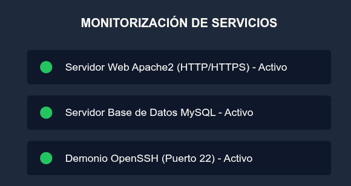

Servicios y Despliegues de Red
Estado de los Servicios Desplegados

Guía de Instalación del Servidor Apache en Linux
-
Actualización de repositorios:
sudo apt update
-
Instalación del paquete Apache2:
sudo apt install apache2 -y
-
Configuración del Virtual Host:
- Ruta:
/etc/apache2/sites-available/portal.conf
- Ruta:
Búsqueda de Servicios
Direccionamiento IP de las Subredes
| Nombre de Subred | Dirección de Red | Puerta de Enlace (Gateway) | DNS Principal |
|---|---|---|---|
| Aula 1 | 192.168.10.0/24 | 192.168.10.1 | 192.168.1.254 |
| Aula 2 | 192.168.20.0/24 | 192.168.20.1 | 192.168.1.254 |
| Total: 2 subredes configuradas. | |||